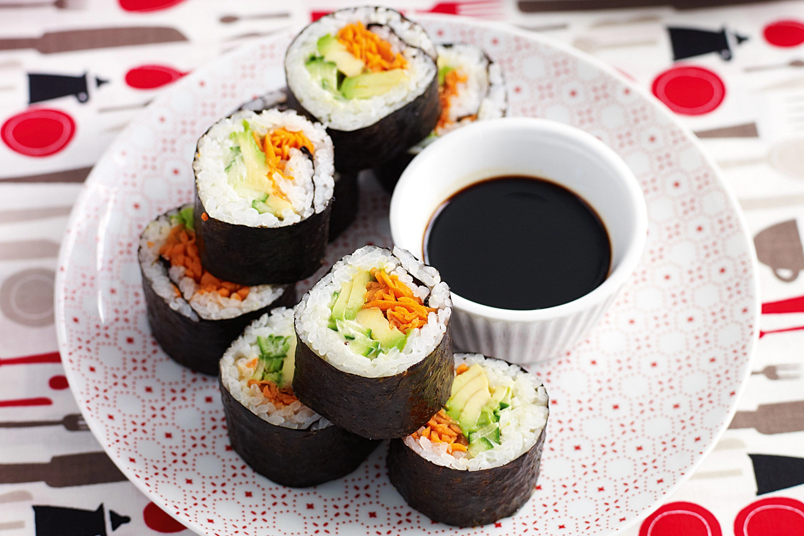
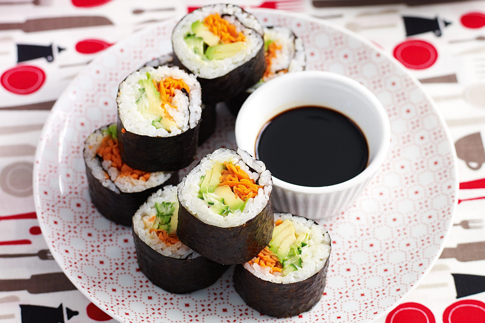

Sushi Zen is a small sushi shop located in Hawkes Bay, New Zealand. This charming and intimate spot serves up delicious and authentic sushi made with only the freshest ingredients. The menu features a variety of traditional and contemporary sushi rolls, as well as sashimi and other Japanese specialties. The atmosphere is cozy and inviting, with a minimalist design that allows the focus to be on the food. Whether you're a sushi aficionado or a newcomer to the world of Japanese cuisine, Sushi Zen is the perfect place to indulge in some delicious and satisfying sushi.


 
